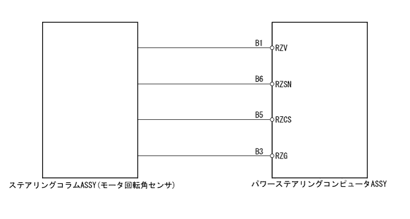
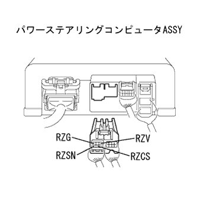

DTC C1528/12 Motor Rotation Angle Sensor Malfunction |
| DTC No | Detection Item | Inspection Area |
|---|---|---|
| C1528/12 | Motor Rotation Angle Sensor Malfunction |
|

)| Step 1 | ECU Data Monitor Inspection (Motor Rotation Angle) |
Using SST (TaSCAN), check the data monitor item "Motor Rotation Angle". (see)
| Item Name | Item Description | Condition | Standard |
|---|---|---|---|
| Motor Rotation Angle | Indicates the motor rotation angle | Engine running, steering wheel turned | Changes between 0 to 360deg while steering |
|
| ||||
| OK | ||
| ||
| Step 2 | Inspect Steering Column Assembly (Motor Rotation Angle Sensor) |
 |
Disconnect connector B from the power steering computer assembly.
Using SST (Toyota electrical tester), measure the resistance between each terminal of the power steering computer assembly wire harness side connector.
| Tester Connection [Power Steering Computer Assembly] | Condition | Standard |
|---|---|---|
| B1(RZV) - B3(RZG) | Always | 27.6 to 41.4Ω |
| B6(RZSN) - B3(RZG) | 75.2 to 112.8Ω | |
| B5(RZCS) - B3(RZG) | 73.2 to 110.8Ω |
|
| ||||
| OK | ||
| ||